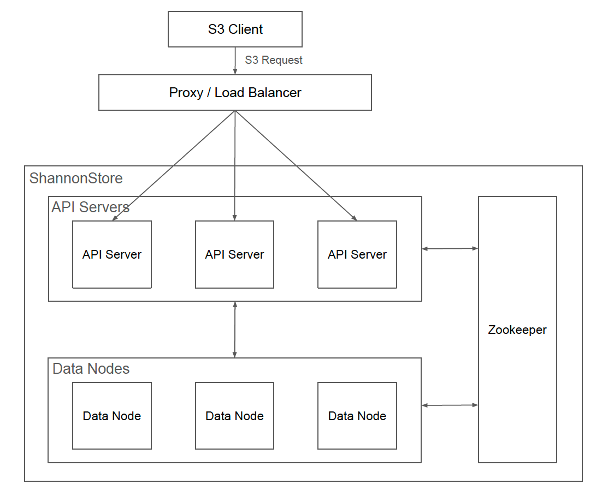

Architecture
ShannonStore is a high-performance, S3-compatible object storage system designed for high availability and elastic scalability in modern data environments. The cluster is composed of three logical tiers — a control & logic tier, a storage tier, and a coordination tier — each scalable independently.
ShannonStore Architecture

Control & Logic Layer (API Servers)
API Servers are the "brain" of ShannonStore. They terminate the S3 protocol, enforce security, and orchestrate data movement across the storage tier.
- S3 protocol handling — Processes RESTful requests and emits S3-compliant XML/JSON responses, including SigV4 authentication, multipart upload, list-objects, and STS AssumeRole.
- Metadata management (RocksDB) — Object locations, sizes, ETags, and per-part MD5 checksums are stored in per-shard RocksDB sub-stores on every API node. Keys are first hashed to one of 65,536 fixed vbuckets (Murmur3 mod 65,536); each vbucket's top-R API nodes by HRW (Rendezvous Hashing) score are its owners (default
R = 2). Per node, vbuckets are grouped into N RocksDB sub-stores (defaultN = 16) that can be striped across multiple disks viashannonstore.api.metadata.rocksdb.dirs. - Security — Granular Role-Based Access Control through users, groups, and policies. Data is encrypted at rest (SSE-S3, SSE-KMS) and in transit, with key material wrapped by a cluster-wide master key.
- Request coordination
- Writes: incoming object data is sliced into Erasure Coding shards (e.g., 2+1 or 4+2) and transmitted in parallel to Data Nodes.
- Reads: shards are fetched from multiple Data Nodes and the original object is reconstructed via EC decoding. Missing or corrupt shards are reconstructed from parity.
Storage Layer (Data Nodes)
Data Nodes are the "warehouse" of the cluster. They persist binary fragments to local disks and serve them to API Servers on demand.
- Chunk store — Data is stored as plain files on the filesystem under hash-bucketed directories, not inside RocksDB. Chunks belong to one of the configured storage paths; multi-disk packing distributes them by disk to balance load.
- High-throughput NIO — A non-blocking NIO server handles concurrent shard transfers with bounded buffers, sized for high-throughput, large-object workloads.
- Metadata-blind — Data Nodes know nothing about object keys, ACLs, or encryption metadata; they store and retrieve bytes keyed by Chunk ID. This separation maximises horizontal scalability.
- Bitrot scrubbing — A configurable background scrubber walks each disk, recomputes shard checksums, and triggers EC-based repair on mismatch.
Coordination Layer (ZooKeeper)
ZooKeeper is the "nervous system" of the cluster — the source of truth for membership and global cluster state.
- Service discovery — All API and Data nodes register under
/s3/discovery/{api,data}with their address, ports, capacity, and ready flag. - Leader election — A Curator
LeaderLatchunder/s3/masters/leaderelects exactly one API Server as the cluster controller. The leader owns IAM/KMS broadcast and cluster-wide readiness signaling. A persistent/s3/coordinator-leader-idznode + startup deference window biases re-elections so the same node tends to win after restart (sticky leader). - Cluster readiness signaling — Three persistent znodes coordinate startup and runtime gating:
/s3/active-leader— the current leader’s ID, host, and ports. Read by Data Nodes to target the leader directly for KMS pulls./s3/leader-ready— flips totrueonce the new leader has finished its KMS/IAM init. Followers and Data Nodes block on this before pulling state./s3/cluster-ready— flips totrueonce every node has registered ready in ZK. Request handlers gate every incoming S3 request on this signal, so traffic is rejected with 503 during a leader transition or partial-readiness window.
Architectural Properties
- Independent scalability — Storage capacity (Data Nodes) and request throughput + metadata capacity (API Servers) scale independently. HRW + 65,536 vbuckets means adding an API node moves only ~1/N of vbuckets, so scaling out doesn't require an offline rebalance.
- Fault tolerance — Data Node and disk failures are masked by EC parity (configurable D + P). API Server failures trigger ZooKeeper-mediated re-election; surviving owners under HRW + replication factor R cover the lost node's metadata.
- Single source of truth — The leader's local KMS and IAM RocksDB are the cluster's canonical state. Followers and Data Nodes pull from the leader on every startup or restart and overwrite their local stores. IAM mutations always route to the leader (followers proxy via HTTP), so its RocksDB cannot be overwritten by a stale follower's snapshot.
- Pluggable disaster recovery — In-cluster chunk-based backup of system state has been removed in favour of an external destination (e.g., a different S3 bucket). This keeps the runtime path lean and aligns disaster recovery with industry-standard offsite-backup practice.